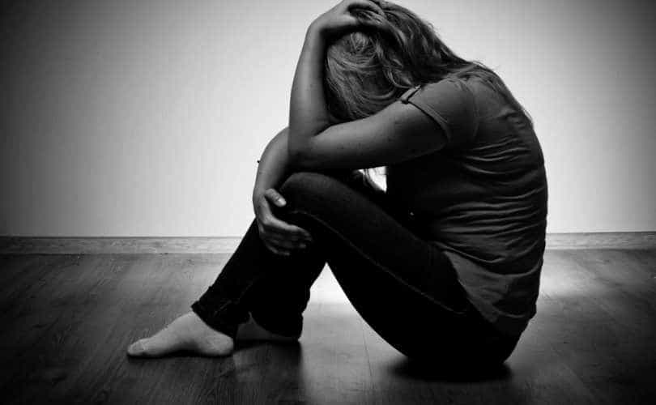

< < < Back
Are Women Careless With Contraception Because They Love The Attention From Getting An Abortion? – Return Of Kings
“Having an abortion was such a traumatic experience for me.” I have heard these words before and undoubtedly I will hear them again, whether in person or via the media. Put simply, women want the attention that comes from both abortion and debates about abortion. Many of them also adore the decision-making capability they can wield in having a foetus inside of them and deciding that it will not ever breathe outside the womb.
Playing the abortion card, despite the ease with which 99% of abortion situations can be avoided, enables women to portray themselves as oppressed pieces of oestrogen-producing meat. After all, there is no quicker way to make feminists feel like victims than to either a) put restrictions or bans on abortion or b) point out the obvious, namely that if women were more responsible with their genitalia abortions would be all the rarer.
It certainly takes two to tango, as men should be wearing condoms if they wish to avoid fathering a child. Yet it is feminist women who ultimately want the right and “difficult choice” to keep or terminate pregnancies. If the issue is supposedly theirs alone, the responsibility to prevent such choices even being required is theirs, too.
Abortion is such a great way for courting attention that Emily Letts decided to film hers and spread the video across the whole of the internet. I kid you not.
Despite thousands of years’ worth of evidence that not at least sheathing a man’s penis is a surefire recipe for pregnancy, women continue to get knocked up. From the ditzy cashier girl in her mid twenties to the deplorably feminist gender studies graduate, women are continually getting themselves pregnant, despite most of them not wanting a child or planning it like a cat plans to swim. But why? If abortion involves such a traumatic choice, even for women who are pro-abortion, why do they subject themselves to a form of masochism easily averted by just using a condom and either a pill or contraceptive implant?
Although I do not discount the huge personal, social, and even environmental impacts the pill has, we can all agree that women are reckless when it comes to sex and abortion. Women who get abortions are more likely not to want children in the first place, at least not now and probably not for the foreseeable future, if ever. Their antics comprise a curious mix of narcissism and self-hatred.
The relative cost of contraception is ridiculously small
It is so damn easy to avoid the coat hanger stage. There should be only 10,000 abortions in the US, not over 1 million.
$150 to $600 is the estimated yearly cost of taking the pill. Half of childbearing-age American women would spend double that sum on café coffees and restaurant food and perhaps thrice it (or more) on clothes and shoes. Condoms, which are improving in protective abilities every half-generation, not to mention their thinness, cost about $1 or less per rubber for packs of one dozen and up. These seem like very small costs to avoid both the alleged trauma of having an abortion (plus the public condemnation feminists claim go with it) and the expenses of raising child, which can easily run to $250,000, by the time they reach 18.
Let’s also not forget that condom use, when performed correctly, has a breakage rate of about 2%. Many of these figures are older and do not take into account improvements in condom design and materials. Even when a woman is fertile, breakage will not always result in pregnancy (not even close). As a result, condoms and other contraceptive measures are clearly not being used because the US records around 700,000 abortions every year. The true figure is well over 1 million, as official figures only count voluntarily submitted data.
If “my body, my choice” rings true, then feminist women have a lot to answer for. On the one hand, they want total choice over the abortion issue. Paradoxically, however, it is anathema for them to acknowledge that most abortions constitute, in fact, self-inflicted trauma. The means of preventing this trauma are so simple and realisable that women doing anything less are usually deliberately bringing abortion-related misery on themselves.
Even if you disagree with me, women are amazingly reckless when it comes to abortion “trauma”

Abortion trauma is real in many ways, as proven by science. But when women avoid excellent ways of preventing this trauma, i.e. taking proper steps not to get pregnant, this trauma is better termed as masochism.
It is fair to say that most people reading this will mostly or totally agree with me. Nonetheless, if you do not feel women maintain angry abortion debates for the purposes of attention and a sense of being able to decide, they are still recklessly bringing abortion “trauma” on themselves. Men are constantly told that we cannot know about the pain of abortion and that many women choose to terminate pregnancies because the demands of motherhood are so onerous. If we assume this is true, women who do not want or are uncertain about children should be avoiding pregnancy like the plague, instead of playing outright Russian roulette with it.
For the record, I am rather ambivalent towards abortion. Low birth rates have essentially destroyed the vitality of Western cultures, so on that count I find it in practical terms a form of social suicide. Conversely, feminists love abortions more than any other group and so them failing to reproduce as much is a win for society. What I find disdainful is that most women get themselves to the abortion stage in the first place. So much public energy, which could be better channelled in solving truly hard problems, is wasted on correcting the lack of responsibility on the part of sexually active women.
If you do not want to face either an abortion or having a child, do not get pregnant. It is literally that fucking simple. But if, like many women, you want a form of perverse attention and victimhood, abortion and fighting about abortion are great ways to achieve this ignoble aim.
Read More: Why Abortion Shouldn’t Be Taken Lightly